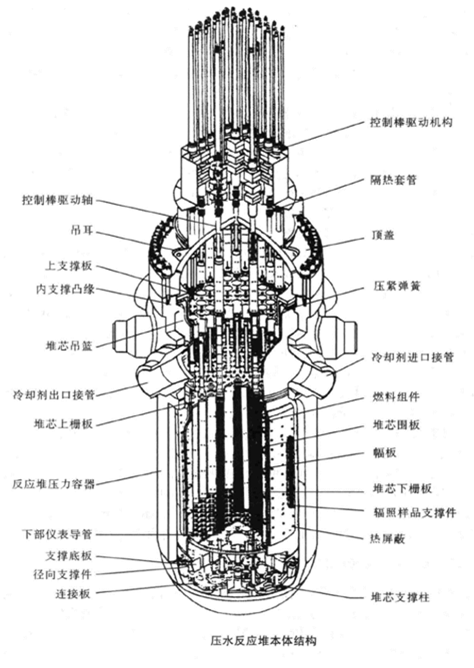

中核集团
2017年核科普开放周活动之第二届全国高校学生课外“核+X”创意大赛
核+动力
主页
概况
核能
核动力
核反应堆
概况
压水堆
基本构成——核能生成系统
主冷却剂系统——内能转换系统
二回路系统——动能输出系统
安全壳
核电站
概况
中国核电站
潜艇核动力装置
概况
中国核潜艇
水面船舰核动力装置
概况
中国核动力航母
空间核能装置
概况
空间核电源
空间核推进装置
发展和研究前景
中、小型核动力发展情况介绍
中、小核动力未来研究的方向
结论
基本构成——核能生成系统
如图所示为一个典型的压水反应堆的本体结构。
堆芯是进行链式核裂变反应的区域，它由核燃料组件、可燃毒物组件、控制棒组件和启动中子源组件等组成。
一座电功率为1000 MW的压水堆堆芯一般装有150~200组燃料组件，40000~50000根燃料元件棒。堆内大约有50组控制棒组件。燃料元件棒垂直放在堆芯内，使堆芯整体外形大致呈圆柱形。为使径向功率展平，大型核电站反应堆核燃料一般按富集度分为三区装载。以局部倒换料方式每1~1.5年更换一次燃料，每次换出大约1/3的燃料组件。堆芯直径约3~4 m，高度3~5 m，装在大型压力容器内。水沿燃料元件棒表面轴向流过，既起着慢化中子的作用，又作为输出反应堆热量的冷却剂。
堆内构件的作用是使堆芯在压力容器内精确定位、对中并压紧，以防运行过程中因流体流动的冲击而发生偏移；同时用来分隔流体，使冷却剂按一定方向流动，有效地带出热量。为了保证反应堆可靠运行，要求这些构件在高温高压水流冲击及强辐照条件下，能抗腐蚀并保证尺寸和形状稳定。
压力容器是压水堆的关键设备，是放置堆芯及堆内构件、防止放射性物质外逸的承压设备。在服役期内，它的完整性对反应堆安全具有举足轻重的地位；要求在高硼水腐蚀和高能中子辐照条件下能使用30~60年，在核电站中压力容器的寿命决定了核电站的寿命。
西南科技大学
石晓钟 陈怡志 张鸿德
指导教师 段涛
指导教师 段涛